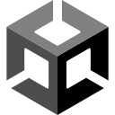
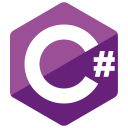
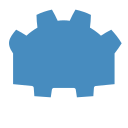
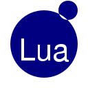

03/2026 — presente
Currículo / 2026
Thadeu
Moscatelli.
Desenvolvedor Unity/C# especializado em transformar ideias de jogo em sistemas sólidos, escaláveis e prontos para produção.
 UNITY
UNITY+ C#Arquitetura de jogos
Performance & ferramentas
Experiências interativas
Tecnologias

Unity
C#
Godot
LuaPICO-8
LÖVE2D

RaylibGitHub
Blender
Contato
Experiência
10/2024 — presente
Desenvolvedor Unity Sênior
Eden’s Frontier- Liderança da arquitetura técnica de um RPG de ação com sistemas de localização, leveling, diálogos e cutscenes.
- Desenvolvimento de Compute Shaders, rotinas de otimização de performance e ferramentas de apoio ao Game Design.
12/2021 — 02/2024
Desenvolvedor Unity
MBR- Desenvolvimento de jogos acadêmicos e educacionais a partir das necessidades do departamento pedagógico.
- Criação de assets 3D e participação no processo criativo, com autonomia sobre performance e desenvolvimento.
04/2019 — 12/2021
Gerente de Comunicação e TI
CCBEU Sorocaba- Gestão de mídias sociais, marketing e desenvolvimento de conteúdo educacional.
- Suporte técnico a professores e implementação de novas tecnologias e cursos.
Especialidades
Game systemsArquitetura modular, gameplay, leveling, save, combos e diálogos.
PerformanceCompute Shaders, pooling, otimização e análise de gargalos.
Tools & pipelineFerramentas de editor, automações, importação e fluxos de produção.
3D & visualModelagem, assets, ambientes low poly e integração com a Unity.
Formação
02/2025 — presente
Engenharia de Software
UnivespAprofundamento em arquitetura e desenvolvimento de sistemas integrados.
08/2019 — 08/2021
Tecnologia em Jogos Digitais
Cruzeiro do Sul03/2010 — 12/2014
Engenharia de Controle e Automação
Anhanguera SorocabaFormação em lógica, engenharia e resolução de problemas técnicos.
Projetos em destaque
Conrado’s Quest
Jogo autoral desenvolvido para explorar arquitetura, documentação e produção completa de um jogo. Ver projeto ↗
Analytics personalizado
Sistema de eventos de jogo com tratamento em Python e dashboard espacial em HTML.
Sistema de localização
Pipeline modular com editor WebGL, Addressables, TextMesh Pro e ferramentas de atualização.
Sistema de sombras
Projeção otimizada de sombras para sprites 2D em ambientes 3D usando Compute Shaders.
Conrado’s Pixel Fun
Projeto mobile de estímulos visuais, coordenação motora, dados em nuvem e Bundles. Abrir ↗
Estudo de Modelagem 3D
Fluxo completo de escultura, retopologia, UV, rig, animação e renderização.